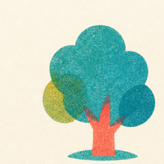
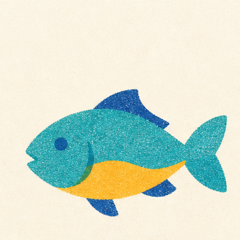
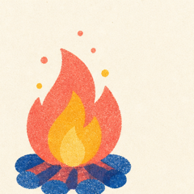
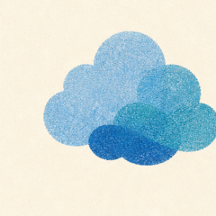
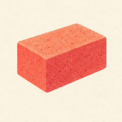
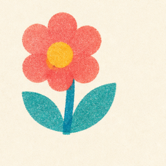

Same six icons (cut from the 4-ink sheet) in three treatments. Each row shows resting cards, a held card (tilted, lifted), a drop target, and a new discovery. Icons blend into the paper with multiply, like real riso ink.
Quiet cream slips on a darker paper table. The "shadow" is a misregistered teal print, not a real shadow. Soft serif names. The calmest of the three: the art does all the talking.

Tree
Fish
Fireheld
Clouddrop target
Brick
FlowernewA printed deep-blue frame with a coral misprint offset, and the name reversed out of an ink band. The most "printed matter" feel and the most readable from a distance. A pale teal table.
Perforated paper tickets on a deep-blue ink table. A colour strip on top shows the card's habitat (teal grove, blue river, coral hot things, yellow meadow), which will matter once zones arrive. Typewriter-style names. The boldest contrast.